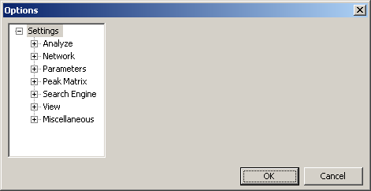
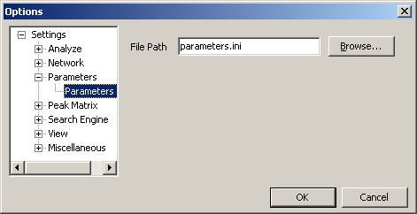

Parameters you set in various dialogs in Mass++ are saved in the parameter file and you can easily customize the location and name of the parameter file.
Select [Tools] in the menu bar and then select [Options].
The Options dialog appears.
The Options dialog can also be displayed by clicking the
 icon in the toolbar.
icon in the toolbar.
Select [Parameters] > [Parameters File] in the Options dialog.
Click [Browse] and select the file.
Click [OK].